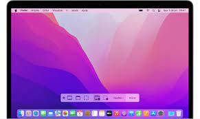
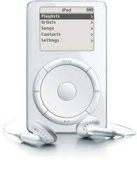
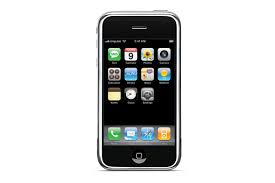
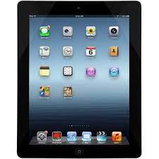
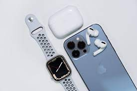
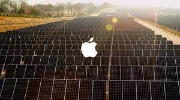

A Revolução da Apple:
Inovação, Impacto e Legado
A Apple Inc. é uma das empresas mais icônicas e influentes da história da tecnologia. Fundada em 1976 por Steve Jobs, Steve Wozniak e Ronald Wayne, a empresa teve um impacto profundo no mundo da tecnologia e além. Neste artigo, exploraremos a história da Apple, suas inovações marcantes e o legado duradouro que deixou para trás.
A História da Apple
A história da Apple é uma história de paixão, inovação e resiliência. Começando na garagem dos pais de Steve Jobs, a empresa rapidamente ganhou reconhecimento com o lançamento do Apple I em 1976, um computador pessoal projetado por Wozniak. O Apple I abriu o caminho para o Apple II, um dos primeiros computadores pessoais de sucesso do mundo. No entanto, foi o lançamento do Macintosh em 1984 que realmente colocou a Apple no mapa. O Macintosh introduziu a interface gráfica do usuário e o mouse, tornando os computadores mais acessíveis e amigáveis para o público em geral. A década de 1990 foi um período desafiador para a Apple, com quedas nas vendas e disputas internas. Mas em 1997, Steve Jobs retornou à empresa que ele co-fundou e liderou um renascimento notável. Sob sua liderança, a Apple lançou uma série de produtos inovadores, incluindo o iMac, o iPod, o iPhone e o iPad.
Inovações Marcantes
Macintosh e a Revolução GUI
O Macintosh foi um divisor de águas na história da computação pessoal. Com sua interface gráfica do usuário (GUI) e mouse, ele tornou os computadores mais acessíveis e fáceis de usar para pessoas comuns.  Isso estabeleceu o padrão para a computação moderna e influenciou profundamente o design de sistemas operacionais em todo o mundo.
iPod e a Revolução da Música Digital
O lançamento do iPod em 2001 revolucionou a forma como as pessoas ouviam música.  Com seu design elegante e a capacidade de armazenar milhares de músicas, o iPod se tornou um dispositivo icônico e pavimentou o caminho para a era da música digital. O iTunes, também lançado pela Apple, ofereceu uma plataforma conveniente para comprar e gerenciar música digital.
iPhone e a Era dos Smartphones
Em 2007, a Apple lançou o iPhone, que redefiniu a indústria de smartphones.  Com sua tela sensível ao toque e a App Store, o iPhone transformou a maneira como interagimos com a tecnologia. Ele não era apenas um telefone, mas um dispositivo multifuncional que podia ser personalizado com uma variedade de aplicativos, tornando-o um elemento essencial da vida moderna.
iPad e a Revolução da Computação Móvel
O iPad, lançado em 2010, popularizou a ideia de tablets como dispositivos de consumo e produtividade.  Ele encontrou sucesso em diversos setores, desde educação até negócios, e expandiu a influência da Apple no mercado de dispositivos móveis.
O Legado da Apple
A Apple deixou um legado profundo e duradouro na indústria de tecnologia e além. Aqui estão alguns aspectos notáveis de seu legado:
Design Elegante e Intuitivo
A Apple é amplamente reconhecida por seu compromisso com o design elegante e intuitivo. Seus produtos são conhecidos pela atenção aos detalhes, pela qualidade de construção e pela simplicidade de uso. Essa abordagem ao design influenciou inúmeras outras empresas e setores, elevando o padrão de qualidade em toda a indústria de tecnologia.
Ecossistema Integrado
A Apple desenvolveu um ecossistema integrado de hardware, software e serviços que oferecem uma experiência de usuário coesa e fluida. Isso significa que os dispositivos Apple funcionam perfeitamente juntos, o que cria uma fidelidade significativa dos clientes e uma vantagem competitiva única.
Inovação Contínua
A cultura de inovação da Apple permanece forte mesmo após a morte de Steve Jobs.  A empresa continua a lançar produtos revolucionários, como o Apple Watch e os AirPods, e a expandir sua influência em áreas como inteligência artificial e realidade aumentada.
Responsabilidade Ambiental
A Apple tem se comprometido com a responsabilidade ambiental, buscando operar de forma sustentável e minimizar seu impacto no meio ambiente.  Isso inclui metas de neutralidade de carbono e iniciativas de reciclagem de produtos.
Conclusão
A Apple é uma empresa que deixou uma marca indelével no mundo da tecnologia. Sua história de inovação, design elegante e compromisso com a qualidade a tornaram uma das marcas mais reconhecidas e respeitadas do mundo. O legado da Apple continua a influenciar a indústria de tecnologia e a forma como interagimos com a tecnologia no dia a dia. À medida que a empresa continua a evoluir, podemos esperar mais inovações que moldarão o futuro da tecnologia e da sociedade.